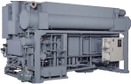
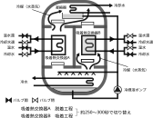

2021年
問題65 冷凍機に関する次の記述のうち，最も不適当なものはどれか．
（1）スクロール圧縮機は，渦巻き状の固定スクロールと渦巻き状の旋回スクロールの旋回により冷媒を圧縮する．
（2）スクリュー圧縮機を用いた冷凍機は，スクロール圧縮機を用いたものより，冷凍容量が大きい．
（3）吸収冷凍機は，都市ガスを使用するので，特別な運転資格が必要である．
（4）遠心圧縮機は，容積式圧縮機と比較して，吸込み，圧縮できるガス量が大きい．
（5）シリカゲルやゼオライト等の固体の吸着剤を使用した吸着冷凍機は，高い成績係数を得ることができない．
2021年
問題65 正解（3） 頻出度AAA
吸収冷凍機は普通外部蒸気を熱源とするが，蒸気を作る熱源は都市ガスに限らない．また，蒸気を使わず，各種排ガスや排熱（高温水，低温水）も熱源になる．又，冷凍機内は真空であり，圧力による破裂などのおそれがないため，運転に特別な資格は必要ない．
蒸気熱源の吸収冷凍サイクル（2021-65-1図）と吸収冷凍機の外観を示す（2021-65-2図）．
2021-65-1図 吸収冷凍サイクル
2021-65-2図 吸収冷凍機の例

出典 荏原冷熱システム株式会社
https://www.ers.ebara.com/product/absorption-cl/absorption-cl-rewraw.html
-(1) ，-(2) ，-(4) 蒸気圧縮式冷凍機で用いられる圧縮機については2021-65-1表参照．
2021-65-1表 冷凍機の主な圧縮機の種類，特徴
| 容積式圧縮機 | シリンダに吸い込んだ気体冷媒の容積を，往復動するピストン，回転するロータ等で圧縮する | 往復動圧縮機 | シリンダ内のピストンを往復運動させて，冷媒ガスを圧縮する． |
| ロータリー圧縮機 | シリンダ内を偏心位置で密着して回転するロータと，内部または外部から仕切るベーンをスライドさせて連続的に，冷媒ガスを吸い込んで圧縮して吐き出す． | ||
| スクロール圧縮機 | 渦巻き状の固定スクロールと旋回する渦巻き状のスクロールにより，吸い込んだ冷媒ガスを圧縮する． | ||
| スクリュー圧縮機 | スクリューロータと呼ばれる螺旋形状の部品を回転させガスを圧縮する．一軸スクリュー圧縮機と二軸スクリュー圧縮機があり，ともに，冷媒蒸気の吸込み風量を制御できるアンロータ機構を有して連続的に冷凍容量制御を行う機種が一般的． スクロール圧縮機を用いたものよりも冷凍容量の大きな範囲で使用される． 高圧かつ高い圧縮比を必要とする自然冷媒（アンモニア, CO2）を使用する冷凍機にはスクリュー圧縮機が有利で，既に実用化されている． |
||
| 遠心式圧縮機 | 羽根車の回転によって生ずる遠心力で冷媒ガスを圧縮する. | 遠心（ターボ）圧縮機 | 高速回転が可能なことにより，大容量になっても重量・据え付け面積とも小さくて済む．中・大容量機を中心に製作されている． |
冷凍機・圧縮機の形式は株式会社前川製作所の冷凍講座に詳しい．余裕のある読者は一読をお勧めする）．
-(5) 吸着冷凍機は，吸収冷凍サイクルの吸収液（リチウムブロマイド溶液）をゼオライトなどの吸着剤に置き替えたもので，冷媒は吸収冷凍サイクルと同じ水である．吸収冷凍機（90～150℃）よりも低温の温水（60～100℃））を加熱源として利用可能で，太陽熱と組み合わせて環境負荷の低い機器の開発が進められている．ただし成績係数は吸収冷凍機（COP0.8～1.4）よりも低い．
吸着冷凍機の仕組みを2021-65-3図に示す．
2021-65-3図 吸着冷凍機の仕組み

出典 日本吸着学会
https://www.j-ad.org/adsorption_news/25_4.pdf を基に作成